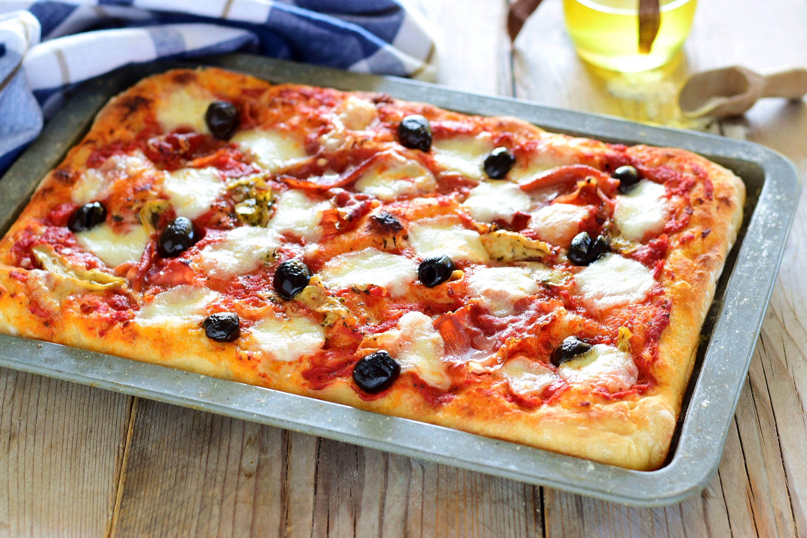

Pizza in Teglia Alta Idratazione
Pizza soffice e croccante con lievitazione lenta, perfetta per casa
Dove la passione per la cucina diventa arte
Pizza soffice e croccante con lievitazione lenta, perfetta per casa

Soffice e genuina, perfetta per colazione e merenda

Con Pecorino Romano DOP e peperoncino, ricco di proteine
Pasta, risotti e zuppe
Carne, pesce e vegetariani
Torte, biscotti e dessert
Appetizer e stuzzichini
Benvenuto nel mio ricettario personale! Qui condivido le mie ricette preferite, quelle della tradizione e le mie creazioni personali.
Ogni piatto racconta una storia, ogni ingrediente ha la sua importanza. Cucinate con amore e passione!